Basics
The commands for partial derivatives look exactly the same as for ordinary derivatives. Use diff.
| > | diff( sin(x)*cos(y), x ); |
From the definition (not to be used in everyday work),
| > | limit( (sin(x+h)*cos(y) - sin(x)*cos(y)) / h, h=0 ); |
The other first partial:
| > | diff( sin(x)*cos(y), y ); |
For an unknown or "generic" function:
| > | diff( g(x,y,z), z ); |
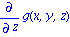
It was important above to say which variables g depends on. Compare to
| > | diff( g, z ); |

To take higher-order derivatives, specify more of the independent variables.
| > | diff( x^3*y^2, x ); |
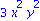
| > | diff( x^3*y^2, x,x ); |
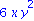
| > | diff( x^3*y^2, x,y ); |
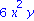
| > | diff( g(x,y), x,y,x ); |
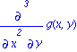
Maple assumes the order of derivatives may be changed freely (as is always the case for the functions we'll encounter).
If you want the derivative at the point (1,2,3), you must differentiate before evaluation.
| > | f:= x*y^2*z^3: |
| > | pt:= {x=-1,y=2,z=-3}: |
WRONG:
| > | diff( eval(f,pt), z ); |

RIGHT:
| > | eval( diff(f,z), pt ); |
Implicit differentiation
Let's use the Law of Cosines. In a triangle with side lengths a, b, c, the angle A opposite side a satisfies
| > | LC:= a^2 = b^2 + c^2 - 2*b*c*cos( A ); |

This is the syntax for finding 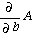
| > | implicitdiff( LC, A, b ); |
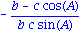
Here is how you would find 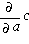
| > | implicitdiff( LC, c, a ); |
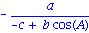
Ideal gas law examples:
| > | implicitdiff( P*V=R*T, P, T); |
| > | implicitdiff( P*V=R*T, V, P); |
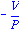
Functional form (optional)
If you define an arrow function using ->, then you differentiate using D. Since the variable names are irrelevant to an arrow function, you refer to them by number.
| > | f:= (x,y,z) -> exp(x-y)*sin(x*z); |
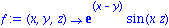
| > | D[1](f); |
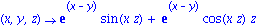
The result above is the same as
| > | diff( f(x,y,z), x ); |
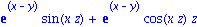
| > | D[2](f); |
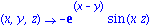
| > | D[1](%); |
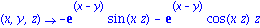
| > | D[2,1](f); |
One of the main advantages of this form is in evaluating at a point.
| > | D[1](f)(2,3,Pi); |
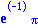
Chain rule
Maple automatically applies the chain rule. For instance, if x and y both depend on s and t,
| > | z:= exp(x(s,t))*sin(y(s,t)); |
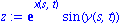
| > | diff(z,s); |
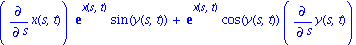
| > | eval( %, {x(s,t)=s*t,y(s,t)=s^3*t^2} ); |
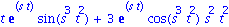